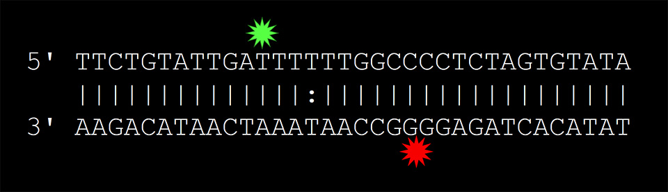

Based on current literature, potassium permanganate (KMnO4) is a molecule able to modify the ring system of DNA bases. Specifically, KMnO4 selectively modifies thymine bases at a much higher rate than any other nucleotides. This means KMnO4 can be exploited to selectively modify the ring system of thymine in an environment containing all other bases. Piperidine (C5H11N) is a molecule capable of interacting with a modified base by breaking down the DNA backbone. Due to the characteristics of these two molecules, they can be used in tandem to target and selectively cleave DNA strands at the site of mismatched thymine bases.
The goal of the experiments outlined in this section is to demonstrate that we can optimize this reaction and selectively cleave DNA at the site of a T-T mismatch on hybridized strands of DNA. To optimize the chemical cleavage of the mismatch (CCM) reaction we designed two DNA sequences that are complementary to each other except for a single position along the sequence. Each strand was labelled with a fluorophore that was positioned on opposing sides of the mismatched bases.
Having these two fluorophores in close proximity enables a process known as Forster Resonance Energy Transfer (FRET). FRET is a useful tool to help gauge the average distance between specific molecules in a solution. Our procedure utilized FRET to determine whether CCM had occurred and to what extent it had occurred. In our design two different fluorophores are located on the same hybridized DNA molecule in close proximity. The “donor” fluorophore is excited light with a wavelength of 494 nm and has the emission maximum at 515 nm. The absorption spectrum of the acceptor overlaps with the emission spectrum of the donor. When a donor fluorophore is excited in close proximity to an acceptor, the excited energy of the donor is transferred to the acceptor causing the acceptor to fluoresce. When the DNA is cleaved at the point of mismatch, the donor and acceptor are no longer held together as part of the same molecule. Consequently, they begin to diffuse apart and the energy transfer is no longer possible because FRET is very sensitive to the distance between the donor and acceptor (the efficiency is inversely proportional to the sixth power of the distance). Thus, in the event of cleavage only the donor emission should be observed.
DNA oligonucleotides were synthesized by IDT DNA. Piperidine (C5H11N), potassium permanganate (KMnO4), sodium chloride, sodium hydroxide, hydrochloric acid, were purchased from Sigma-Aldrich and used without further purification. All the experiments were performed in aqueous solutions. Water was purified using a Simplicity UV ultrapure water purification system (Millipore). In all the experiments, unless otherwise stated, the final concentrations of the reagents were maintained constant: [Donor] = 500 nM, [Acceptor] = 1000 nM, [NaCl] = 100 mM, [KMnO4] = 0.1 mM, [NaHSO3] = 1 mM, [C5H11N] = 1 mM. The emission spectra were recorded using a Cary Eclipse fluorescence spectrophotometer (Varian).
Initially, solutions of the two DNA sequences were hybridized by mixing solutions in the presence of NaCl. This resulted in hybridized DNA strands containing both a donor and acceptor fluorophore positioned just 9 bases apart along the DNA strand. Situating the fluorophores in close proximity enabled donor energy transfer to the acceptor, which produced the FRET signal we used to analyze the extent of strand cleavage.
The chemical cleavage reaction was the performed in 3 steps. First, KMnO4 was introduced to modify the ring system of mismatched thymine bases (link to vlads explanation of modification). Second the “stop buffer” (NaHSO3) was added after precisely 5 minutes of KMnO4 incubation. This neutralized the KMnO4 in solution, which halted further modification of DNA bases, by KMnO4. Finally, piperidine was added, which cleaved the DNA strands at the site of the modified bases.
The data demonstrates a decrease of the acceptor fluorescence signal and an increase of the donor emission. These results indicate the FRET system was largely destroyed, i.e. the donor is no longer in close enough proximity to donate its energy to the acceptor. This indicates that the CCM procedure was successful in cleaving the hybridized DNA strands with a T-T base pair mismatch.
In order to confirm this CCM reaction was working as expected we performed a series of control experiments to further test our cleavage hypothesis. To demonstrate that KMnO4 is essential to carrying out cleavage, the above 3-step procedure was carried out without KMnO4.
This data shows that the change in the FRET signal is negligible after the same CCM procedure is carried out without the presence of KMnO4. This supports the hypothesis that KMnO4 is responsible for modifying the DNA bases at the T-T mismatch site, in order for piperidine to cleave the DNA backbone.
To confirm that piperidine is the agent responsible for cleaving the backbone of a modified base, a third control experiment was performed, demonstrating that KMnO4 is not capable of cleaving the DNA base without the introduction of piperidine. In this control experiment, the 3-step CCM procedure was performed without the addition of piperidine.
There is no significant change in FRET observed in the collected data when piperidine is not introduced to the solution. This supports our claim that both KMnO4 and piperidine are required for cleaving mismatched DNA bases.